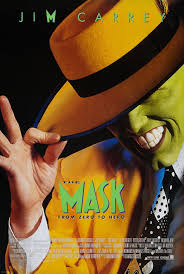
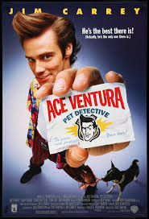

Películas destacadas
La Mascara
Eterno resplandor

Ace Ventura
El show de Truman

Jim Carrey es uno de los actores de comedia más influyentes de las últimas décadas, conocido por su humor físico, expresividad exagerada y energía inigualable. Alcanzó fama mundial en los años 90 gracias a películas de comedia icónicas, pero también recibió elogios por sus papeles dramáticos. Además de su carrera actoral, desarrolla obras de arte visual y participa activamente en causas sociales.
@jimcarrey: "La creatividad no es un trabajo: es una necesidad del alma. ¡Sigue creando!"